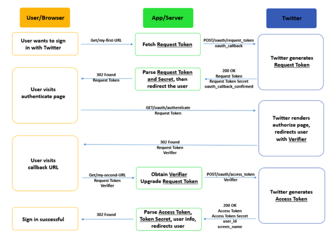

By Hannah Li
Single Sign-On (SSO) services are widely used in modern web applications for authentication and social networking. While implementing a SSO service for a website is moderately straightforward, building it correctly could be tough and mistakes can lead to serious security consequences. Previous research on Facebook SSO revealed several major vulnerabilities which could easily allow an attacker to obtain sensitive user information or to take full control of a user’s account. These security weaknesses can often lead to token credentials misuse.
Because of these findings, I was motivated to discover whether SSO services implemented with other versions of OAuth would exhibit the same security vulnerabilities. I analyzed Twitter SSO, which is implemented using OAuth 1.0A instead of OAuth 2 which is used by Facebook, for similar security weaknesses. I searched for vulnerabilities by building a web application implementing Twitter SSO and by examining the traffic between the client and the server for patterns and token leakages.
Twitter SSO Protocol: Tokens
The four “tokens” which could be used by an attacker are the Consumer Key, Request Token, Verifier, and Access Token, which will be the focus of this analysis. For the rest of this post, Alice is the user and Mallory is the attacker.
Consumer Key. The Consumer Key and Secret are given to the application when it registers with Twitter. App developers are instructors to keep this key/secret pair secret and if exposed, to generate another key/secret pair.
Request Token. This token also comes in a key/secret pair. This temporary key is issued by Twitter to the application when Alice first requests to sign in with twitter. While the key is shown publicly in the URL, the secret should be kept private.
Verifier. The Verifier is a publicly shown key (in the URL) that Twitter issues to confirm that Alice has approved the application.
Access Token. This key/secret pair is a more permanent token that allows applications to access protected resources on behalf of Alice.
Twitter SSO Protocol: Overview
The diagram below provides a high-level description for Twitter SSO procedure, breaking up the protocol into three steps, each processing an authentication token.

Twitter SSO Protocol: More Details
The diagram below expands each of the three steps. Note that the items written on the arrows do not show a comprehensive list of parameters sent, but rather a few important ones (see Implementing Sign in with Twitter Overview and OAuth Core 1.0a for detailed documentation).

Security Implications
To evaluate the security of Twitter’s SSO implementation, I tried swapping all three tokens for other tokens in different combinations. I did not find any way to use these methods to gain illicit access to private, user information. There are several countermeasures associated with each token that Twitter SSO uses to prevent this type of attack.
Request Token. The Request Token must be connected to the Consumer Key and Secret and expires after the first time it is used to request an Access Token. Due to its temporary nature and correspondence with the Consumer Key and Secret, Mallory cannot exploit the system by stealing this Request Token without also knowing the Consumer Key and Secret, which should be kept secret.
Verifier. Twitter issues a different Verifier each time, thus preventing a malicious party from reusing the Verifier through an impersonation attack. Even through the Verifier is passed through the URL, like the Request Token, Mallory cannot attack the web application without also knowing the Consumer Key and Secret.
Access Token. Each Access Token is connected to a Consumer Key and Secret, which are known only to the application developer. So even if Mallory were to successfully obtain a leaked token over the traffic, she would not be able to use it to log into Alice’s account. This is verified with HuffingtonPost.com, which leaks its Access Token pair through its last message to Alice’s browser. Without this defense, Mallory could have used the leaked Access Token to issue requests to Twitter on behalf of HuffingtonPost.com and Alice.
The last precaution also proved to be useful in another serious mistake in the SSO service. Many tests found that when an application uses the Access Token to request Alice’s information or post on her behalf, Twitter does not check the Access Token Secret, as only providing the Access Token is enough to give the client permission.
This may not pose a realistic security threat because the entire Access Token key pair is typically kept secret, so in order to take advantage of this mistake, Mallory would need to find the Consumer Key and Secret as well. To make the entire system more secure, it is recommended that Twitter verify the Access Token Secret, as many keys and secrets are accidentally leaked through GitHub and even mobile applications when the developers are not careful. When Mallory has both the Access Token and Consumer Key token/secret pairs, it would be much easier to attack a web application.
Though checking the Access Token against the Consumer Key makes SSO safer to use, it has its weaknesses as well. Mobile Applications are easy to reverse engineer since the client code must be made available. If an application needs the Consumer Key to implement SSO, then there is no possible way to build a client-only secure application with SSO since the Consumer Key must be in the code. The secure approach re-routes requests through an application server, which can securely store the key and add it to the requests sent to Twitter. This adds an extra step to app building and many developers may not realize the importance in not including the Consumer Key in the application code.
A recent study from Columbia (Nicolas Viennot, Edward Garcia, and Jason Nieh. A Measurement Study of Google Play. ACM SIGMETRICS, June 2014) scanned thousands of applications in the Google Play Store for token and secret leakages, supports the conclusion that requiring a Consumer Key from the client often leads to faulty implementations. They discovered 1,477 Facebook credentials and 28,235 Twitter credentials among all the free applications when the Facebook SDK is used twice as much as the Twitter4J Library. While their explanation of the significant difference in credentials found makes sense, a more reasonable explanation is that without using a server, it is impossible to implement a Twitter SSO without including the Consumer Key in the code.
Conclusion
While Twitter’s implementation of SSO has security advantages for web applications, it is dangerous for mobile applications. There are two clear options an API developer could use to make an authentication protocol: either you require the server to verify the Consumer Key and Secret during each step of the procedure, or you don’t, hoping that Mallory does not gain access to key information. The latter option, however, leads to many vulnerabilities as clearly seen with Facebook SSO. The first, seemingly more secure, choice causes mobile applications to sacrifice the security of an OAuth protocol.


{kind=link}